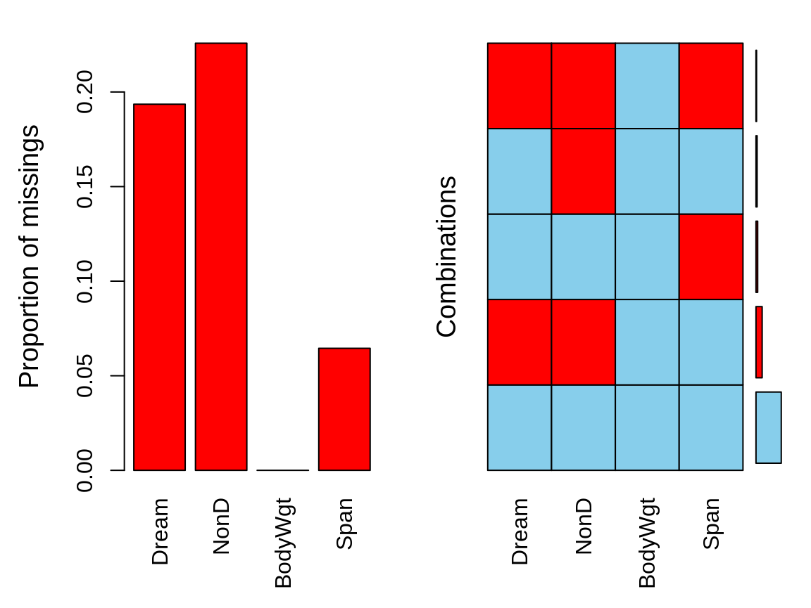
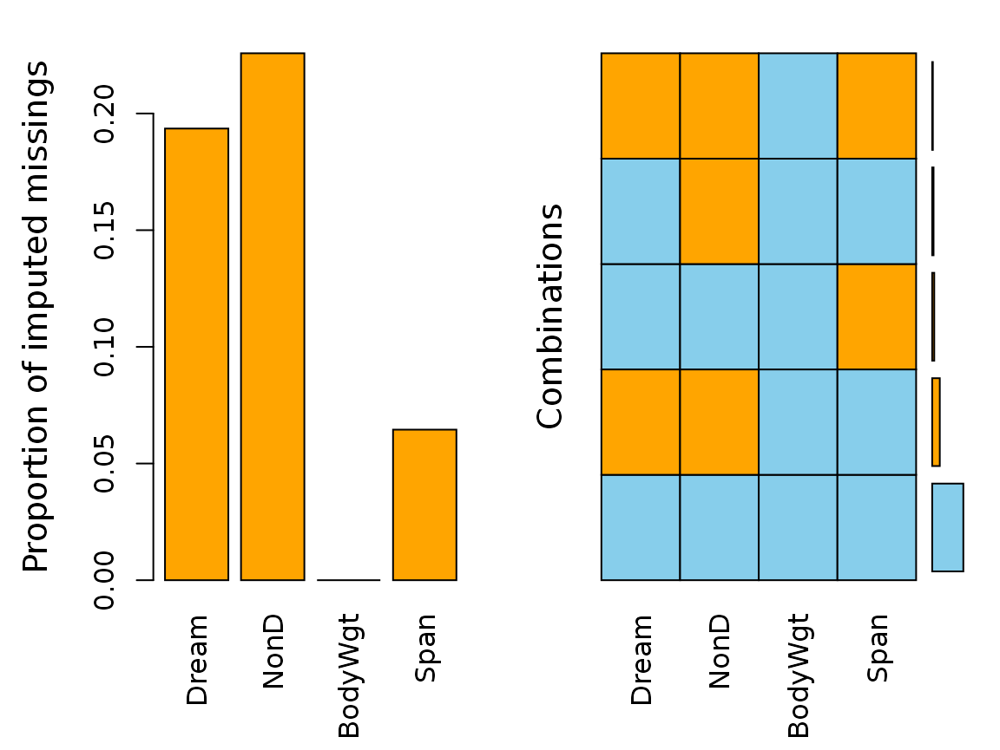
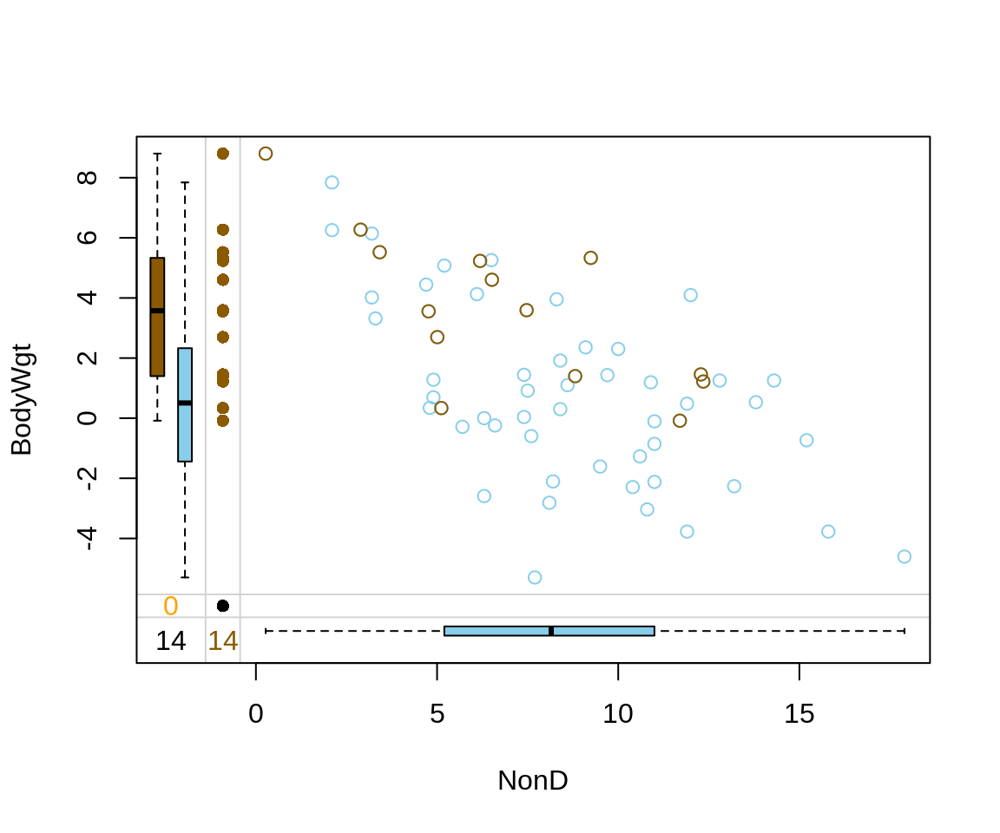
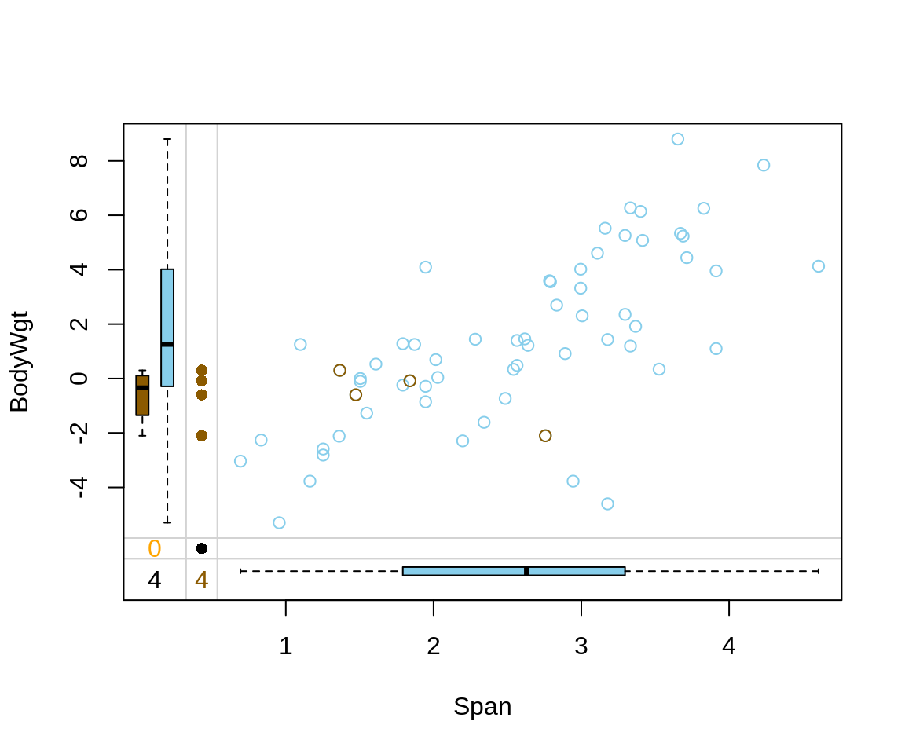
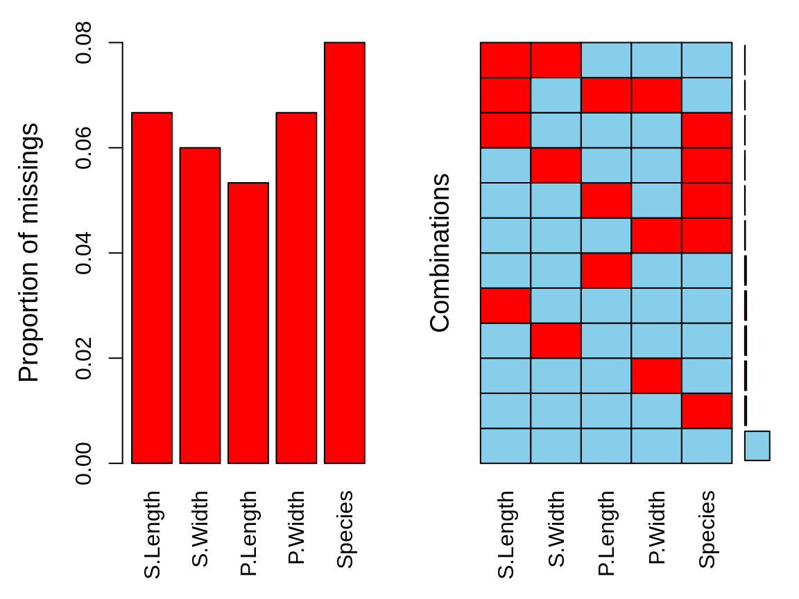
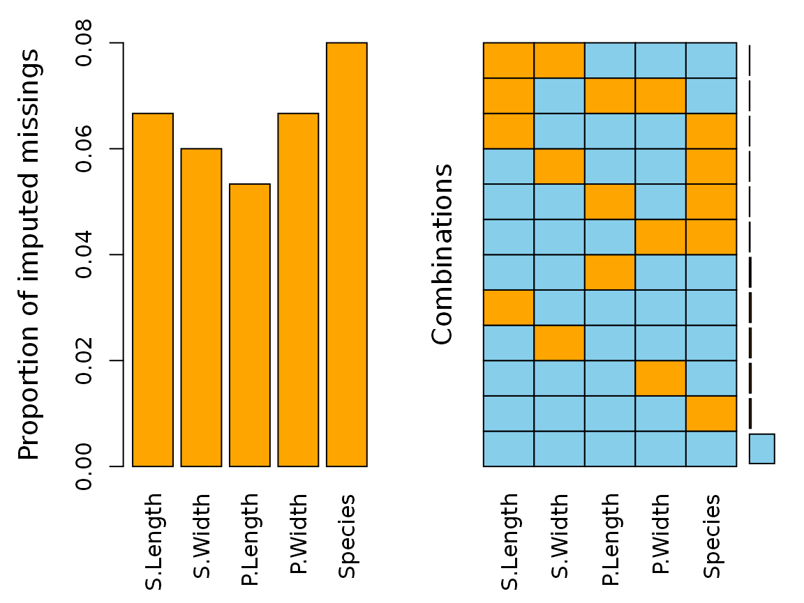

In addition to Model based Imputation Methods (see vignette("modelImp")) the VIM package also presents an iterative imputation method.
This vignette showcases the function irmi(). IRMI is short for Iterative Robust Model-based Imputation. This method can be used to generate imputations for several variables in a dataset.
Basically irmi() mimics the functionality of IVEWARE (Raghunathan et al., 2001), but there are several improvements with respect to the stability of the initialized values, or the robustness of the imputed values. In contrast to other imputation methods, the IRMI algorithm does not require at least one fully observed variable. In each step of the iteration, one variable is used as a response variable and the remaining variables serve as the regressors. Thus the “whole” multivariate information will be used for imputation in the response variable. For more details, please see IRMI Imputation.
The following example demonstrates the functionality of irmi() using a subset of sleep. The columns have been selected deliberately to include some interactions between the missing values.
library(VIM) library(magrittr) dataset <- sleep[, c("Dream", "NonD", "BodyWgt", "Span")] dataset$BodyWgt <- log(dataset$BodyWgt) dataset$Span <- log(dataset$Span) aggr(dataset)

The plot indicates several missing values in Dream, NonD, and Span.
The call of the function is straightforward and the algorithm usually converges in a few iterations.

We can see that irmi() imputed all missing values for all variables in our dataset.
As we can see in the next plot, for imputing missing values in NonD Bodygt plays an important role. The original data structure of NonD and BodyWgt is preserved by the irmi() imputation method.
imp_irmi[, c("NonD", "BodyWgt", "NonD_imp")] %>% marginplot(delimiter = "_imp")

The same is true for the data structure of Span and BodyWgt.
imp_irmi[, c("Span", "BodyWgt", "Span_imp")] %>% marginplot(delimiter = "_imp")

In order to validate the performance of irmi() and to highlight the ability to impute different datatypes the iris dataset is used. Firstly, some values are randomly set to NA.
library(reactable) data(iris) df <- iris colnames(df) <- c("S.Length","S.Width","P.Length","P.Width","Species") # randomly produce some missing values in the data set.seed(1) nbr_missing <- 50 y <- data.frame(row=sample(nrow(iris),size = nbr_missing,replace = T), col=sample(ncol(iris),size = nbr_missing,replace = T)) y<-y[!duplicated(y),] df[as.matrix(y)]<-NA aggr(df)

We can see that there are missings in all variables and some observations reveal missing values on several points.

The plot indicates that all missing values have been imputed by the IRMI algorithm. The following table displays the rounded first five results of the imputation for all variables.